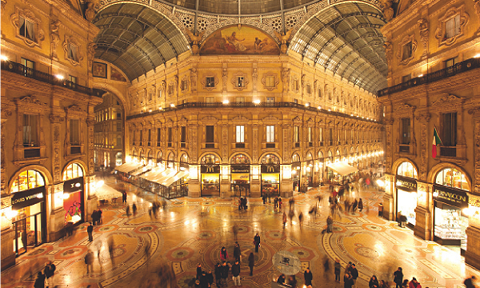
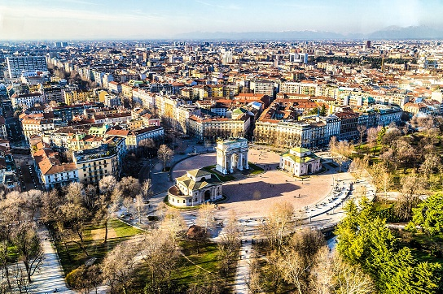
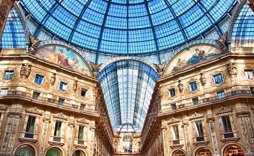
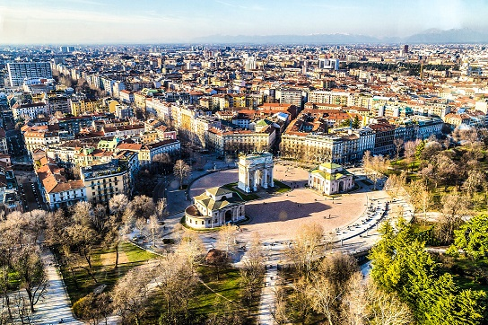
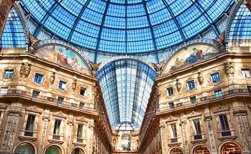

Milan
Bienvenue à Milan
Voici la ville italienne du futur, une métropole trépidante où la créativité fait rage, où chacun soigne son look et où l'aperitivo s'élève au rang d'art de vivre.
Côté patrimoine, Milan recèle des trésors inattendus qui, à l'inverse du reste de l'Italie, sont peu fréquentés par les touristes et les marchands du temple.
Elle n'a pas la réputation d'être jolie mais ne manque pourtant pas de caractère. Un lacis de ruelles pavées rayonne depuis la cathédrale, tandis que les charmants quartiers anciens de Brera et des Navigli, les canaux, sont dignes de figurer sur n'importe quelle brochure touristique vantant la Péninsule.
Milan peut paraître introvertie et d'humeur sombre, mais ses 1,3 million d'habitants sont d'infatigables optimistes, de grands ambitieux et des princes de l'élégance souvent pleins de verve.
S'ils n'ont pas le temps de dérouler le tapis rouge aux visiteurs, les Milanais sont ravis de partager leur mode de vie : faire du shopping, soutenir le Milan AC ou l'Inter, parcourir les galeries d'art d'avant-garde et les showrooms des designers les plus chics du monde, découvrir une gastronomie créative et variée, écouter un opéra de Verdi à la Scala, fréquenter les clubs le week-end jusqu'à l'aube ou sacrifier au rituel de l'aperitivo devant un verre de negroni.
Les lieux à visiter
-
Quadrilatero d'Oro
Tous ceux qui s'intéressent au tombé d'une robe ou à la coupe d'une veste doivent faire du Quadrilatero d'Oro, le quartier de la mode et du shopping de renommée mondiale, une priorité absolue. Ce quadrilatère de rues pavées à l'ancienne a toujours rimé avec élégance et argent (la Via Monte Napoleone était jadis l'endroit où les autorités napoléoniennes accordaient les prêts), mais son statut actuel date de l'après-guerre. Pendant l'essor économique des années 1950, les maisons de couture de la ville établirent leurs ateliers dans le périmètre défini par la Via Monte Napoleone, la Via Della Spiga, Sant'Andrea et la Via Manozoni.
La clientèle ne tarda pas à suivre, mais il faudra attendre les grisantes années 1980 pour que la notoriété de « Monte Napo » dépasse les frontières. Le secteur est à nouveau en pleine expansion et, tandis que les marques internationales comme Dolce & Gabbana, Armani et Prada accaparent les devantures, le commerce de luxe se répand jusqu'à la Via Verri et au Corso Venezia. En réalité, les grands noms ne semblent pas avoir de limites. D&G ne se contente plus de vous habiller de pied en cape, mais coupe désormais les cheveux et sert des cocktails. Roberto Cavalli et Giogio Armani ouvrent des cafés, des restaurants, des clubs et des magasins d'articles pour la maison, tandis que Gianfranco Ferré se propose de tonifier votre silhouette et de contribuer à votre bien-être dans son spa. Parmi ces célèbres enseignes subsistent toutefois des boutiques plus traditionnelles et discrètes, à défaut de vendre des articles moins onéreux. Vous trouverez ainsi de la lingerie et de la layette fines chez Ars Rosa, des vêtements sports intelligents chez Aspesi, des landaus tendance chez Aprica, des brosses fabriquées à la main chez G. Lorenzi et des pierres précieuses à foison dans les ateliers de joaillerie familiaux. Tom Ford, un nouveau venu, a un pied dans le passé – son vaste magasin dans une villa sur trois étages évoque un club masculin tout droit sorti d'un film de James Bond – et un autre dans le présent, avec des produits d'une conception très actuelle. Même si vous n'avez pas l'intention de vous promener les bras chargés de sacs, le « Quad » vaut aussi une visite pour sa faune : élégantes portant renards argentés sur mesure, mannequins aux jambes de gazelle et à l'air détaché comme sur une scène de défilé, dames couvertes d'accessoires qui prennent un expresso au bar Cova en flirtant avec les serveurs…
-
Duomo
Qu'il s'agisse ou non de votre première visite à Milan, la vision de la cathédrale ne manque jamais de susciter une admiration respectueuse. Sa façade en marbre gris rosé de Candoglia et ses hautes flèches surplombent un dédale de rues encombrées. Aujourd'hui emblématique de la ville, le Duomo a connu un passé tumultueux. Lancé par Gian Galeazzo Visconti en 1387, ce projet ambitieux fut d'abord considéré comme techniquement irréalisable. On creusa des canaux pour acheminer le marbre dans le centre et l'on inventa de nouvelles techniques de construction adaptées à ce monument d'une ampleur inédite. La question du style se posa également.
Ses lignes gothiques, jugées « trop françaises », se révélèrent bientôt passées de mode et l'édifice adopta plusieurs architectures différentes au fil des siècles. Du fait de son édification longue et complexe, la cathédrale devint même synonyme de tâche impossible (fabrica del Dom en dialecte milanais). Alors qu'il était roi d'Italie (et Milan la capitale de ce royaume), Napoléon Ier saisit l'occasion d'associer son nom à une entreprise monumentale en finançant son achèvement en 1805. L'architecte désigné ajouta des éléments néogothiques faisant écho au style initial. Les pinacles, contreforts, arcs rampants, cymaises et acrotères de pierre remontent pratiquement tous au XIXe siècle. Le dernier porche fut achevé dans les années 1960, peu avant le début des travaux de restauration. Les rénovations les plus récentes ont pris fin en 2008. Conçue à l'origine pour contenir toute la population de Milan, soit quelque 40 000 âmes, la cathédrale présente un aspect à la fois élégant, exubérant et spirituel qui transporte le visiteur du XXIe siècle dans la spiritualité du Moyen Âge. À l'intérieur, une fois accoutumé à la lumière tamisée et aux proportions des cinq nefs grandioses, l'œil est attiré par les vitraux, réputés les plus grands de la chrétienté. Sous l'œil vigilant de la Madonnina (la statue dorée de la Vierge qui surmonte le Duomo), vous pourrez aussi déambuler entre les flèches du toit pour vous sentir plus près des cieux. On peut théoriquement apercevoir le Matterhorn par temps clair mais, vu la célèbre brume milanaise, autant compter sur un miracle.
-
Galleria Vittorio Emanuele II
En face de la cathédrale, la galerie Victor-Emmanuel II est une prouesse d'ingénierie. Cette vaste galerie néoclassique de verre et d'acier, qui relie le Duomo à la Scala, préfigure la nouvelle Italie industrielle du Risorgimento (période de »renaissance« au XIXe siècle au terme de laquelle l'unité italienne est réalisée). Malgré ses proportions dignes d'une église et son plan cruciforme, elle célèbre une activité bien profane : le shopping. Innovant à l'époque, le bâtiment fut souvent imité. Son architecte, Giuseppe Mengoni, mourut en 1877 juste avant l'achèvement du projet auquel il consacra 14 ans de sa vie. Afin de conjurer une telle malchance, observez la tradition : passez sous la vaste verrière pour rejoindre la mosaïque représentant un taureau et frottez votre semelle sur ses testicules. Malgré cette coutume triviale, l'esprit du luxe et de l'élégance domine les lieux : Prada, Gucci et d'autres enseignes haut de gamme se mêlent aux gantiers et modistes rétro. On peut aussi siroter un Campari aux terrasses des cafés et regarder les passants.
-
Aperitivo
Milan n'a peut-être pas inventé le rituel de l'aperitivo, mais les Milanais l'ont élevé au rang de tradition. Les bars de toute la ville sortent dès 18h des plateaux chargés de victuailles à grignoter en buvant un verre. Il suffit de commander un negroni (puissant mélange de Campari, d'Antico Rosso et de gin au goût légèrement médicamenteux) ou un sbagliato pétillant, la même chose avec du prosecco (vin blanc mousseux) à la place du gin, et de se frayer un chemin jusqu'au comptoir ou à la table du buffet. Si les plats peuvent rester simples et traditionnels – patatine fritte maison (des frites), olives et amandes grillées –, l'offre devient cependant de plus en plus sophistiquée pour satisfaire les papilles difficiles et vagabondes de la clientèle. Crostini (petits toasts recouverts de garnitures diverses), salades, jambon, saumon fumé et pâtes chaudes rendent souvent le dîner superflu. Le happy-hour à l'italienne n'entraîne pas d'abus d'alcool, les Milanais buvant lentement leur cocktail entre deux bouchées de nourriture solide. Il s'agit avant tout de se détendre après le travail, de rencontrer quelques connaissances et amis et d'échanger.
-
Pinacoteca di Brera
Ce musée de peinture fut fondé à la fin du XVIIIe siècle à l'étage de l'Académie de Brera – c'est aujourd'hui encore l'une des écoles d'art les plus prestigieuses de la Péninsule –, plus ancienne. La pinacothèque renferme les marbres et les peintures qui servaient de modèles aux étudiants de l'époque. Napoléon Ier ajouta plus tard à la collection des œuvres inestimables, « empruntées » notamment à différents ordres religieux. Si Rembrandt figure aussi parmi les maîtres représentés, on vient surtout ici pour admirer de grands noms de la peinture italienne comme Titien, le Tintoret, Véronèse, le Caravage et les frères Bellini. La plupart des tableaux frappent par leur forte charge émotionnelle. Ainsi cette Madone de Bellini, vêtue de bleu profond et dont le regard est à la fois triste et déterminé. De même le Christ mort de Mantegna, brutal dans son raccourci anatomique dépourvu de sentimentalisme. Le Cristo deriso de Sodoma utilise tous les artifices du style maniériste pour exprimer le tragique de l'épisode illustré.
-
Un soir à la Scala
Stendhal, qui eut la première crise du syndrome qui porte son nom en rencontrant Byron dans une loge de la Scala en 1816, ne fut sans doute pas le dernier à défaillir dans la salle d'opéra la plus célèbre du monde. Si les rénovations récentes ont doté l'endroit d'une acoustique améliorée et d'écrans au dos des sièges pour visualiser le livret en deux langues, le charme du XVIIIe siècle demeure. Six niveaux de loggie (loges et balcons) ornées de dorures et tapissées de tissu cramoisi accueillent les soirs de représentation un public tout aussi paré. Vieilles fortunes milanaises et nouveaux riches se montrent à cette occasion. À l'entracte, le spectacle continue au bar du théâtre, véritable boîte à bijoux, ou au restaurant voisin Il Marchesino, où l'on échange des commentaires mondains un verre de vin pétillant à la main. « L'opéra demeure la chose la plus ennuyeuse sur terre s'il ne parvient pas à nous faire rêver tout éveillé aux chagrins secrets qui perturbent les vies les plus heureuses en apparence », disait Stendhal. La Scala est l'endroit parfait pour laisser cette rêverie s'emparer de vous.
-
Navigli
Le secteur des Navigli, du nom des canaux qui le traversent, fut jusqu'au milieu du siècle dernier un quartier populaire de docks, de blanchisseries et d'entrepôts. Le Naviglio Grande se développa à partir d'un fossé d'irrigation pour devenir au XIIIe siècle le grand axe urbain. À l'époque médiévale, c'est par ces voies d'eau que le sel, l'huile, le fromage et le vin transitaient jusqu'en ville. D'autres canaux furent creusés pour acheminer le marbre destiné au Duomo. Désormais comblés et goudronnés, beaucoup font désormais office de routes périphériques. Après une brève période de déshérence à la fermeture des docks dans les années 1960 et 1970, le labyrinthe de rues, de canaux et de jolis ponts en fer des Navigli a attiré artistes et musiciens, supplantant ainsi Brera comme quartier bohème. S'il a perdu depuis son côté subversif, il résiste malgré tout à l'aspect bling-bling qui touche d'autres endroits de Milan. Restaurants et bars animés et originaux ont toujours pignon sur rue ici, au côté de quelques boutiques indépendantes.
-
Épiceries fines
Faire des achats à Milan ne se limite pas aux boutiques de vêtements, d'accessoires ou d'objets design. Une multitude d'épiceries fines s'adressent aux gourmands comme aux connaisseurs. Le centre abrite deux hauts lieux de la gastronomie, le véritable Peck et l'espace gourmet au 7e étage du grand magasin La Rinascente, qui proposent une gamme impressionnante de produits italiens : pâtes, huiles d'olive, conserves, biscuits, fromages, charcuterie, pâtisseries et chocolats. Ils comportent également des cafés et restaurants pratiques pour déjeuner lors d'une séance de shopping. Eataly, l'enseigne de l'organisation piémontaise Slow Food, a aussi ouvert ses portes récemment. Autrement, de petites boutiques spécialisées sont disséminées en ville : alimentari et salumarie (épiceries et charcuteries) qui vendent des produits lombards et d'autres régions, enoteche (cavistes), chocolatiers-confiseurs et pâtisseries où l'on peut se fournir notamment en pannetone. Les marchés milanais méritent également qu'on s'y intéresse pour la qualité de l'offre et les prix bas.
-
La Cène
Quand Léonard de Vinci travaillait à La Cène (Il Cenacolo), un moine nota qu'il arrivait parfois le matin, regardait ce qu'il avait fait la veille et s'en allait promptement. Votre visite sera tout aussi brève : 15 minutes intenses avant d'être reconduit sur le Corso Magenta. Malgré le temps compté et la difficulté d'obtenir des billets, les milliers de reproductions douteuses et le très discutable Da Vinci Code sont vite éclipsés quand on se trouve face à la fresque elle-même, dans l'ancien réfectoire du couvent de Sainte-Marie-des-Grâces. Les techniques novatrices expérimentées par le peintre et des années de mauvais traitements ont fragilisé l'œuvre. Les restaurations, souvent controversées, effectuées depuis vingt ans pour la préserver, n'ont pas changé grand-chose. Le piètre état de l'ensemble n'enlève cependant rien à sa stupéfiante beauté dramatique qui semble d'inspiration divine. En fait, c'est sans doute à force de méditation que Léonard a su rendre les expressions des disciples si humaines, en voulant les saisir au moment où le Christ leur annonce qu'un parmi eux va le trahir.
-
Villa Necchi-Campiglio
Loin des hauts murs et des concierges suspicieuses qui protègent les demeures de la haute bourgeoisie milanaise des regards indiscrets, la Villa Necchi-Campiglio, rouverte en 2008, accueille les visiteurs, désormais libres de se promener dans son jardin. Cette villa des années 1930, restaurée de façon exquise, fut conçue par l'architecte rationaliste Piero Portaluppi pour deux héritières de Pavie, Nedda et Gigina Necchi, ainsi que l'époux de cette dernière, Angelo Campiglio. Le trio pouvait alors s'enorgueillir de posséder l'une des seules piscines privées de la capitale lombarde, ainsi que des vérandas donnant sur une petite serre et un système de volets électriques profilés. Combinaison des styles Art déco et rationaliste, la demeure incarne tout à la fois la modernité des années 1930 et la tradition aristocratique. Les détails du quotidien – les monogrammes inspirés du Bauhaus sur les brosses à cheveux et la porcelaine tendre, les bagages des deux sœurs préparés pour leurs nombreux voyages à l'étranger, un placard de cuisine rempli de piles de linge, des robes du soir en soie suspendues à des cintres – présentent autant d'intérêt que les lignes pures du bâtiment et les tableaux coûteux de Morandi et de De Chirico.
Découvrez la beauté de Milan



 


